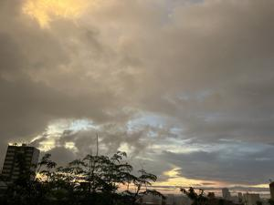
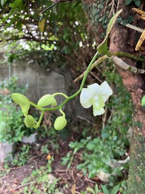

うるがいの話 ある日
最新: 車の名義変更【うるがいの話 ある日】とは 一日だけのプログです
『うるがいの話』の最新一日だけのプログで、通信料が少なく経済的だ。カニの画像をクリックすると全ての日付が載る『うるがいの話』サイトを表示します
|
|
【うるがいの話】 うるがい(ｳﾙｶﾞｲ urugai)とは、『もずくがに』の名前でとても大きくなります。 |
|---|---|
|
|
【カミマヤーの話】 猫のことを方言でマヤーといいます。カミマヤー（kamimayaa）とは、神の猫のことです。 |
|
【たながぁの音楽】 たながぁ（ﾀﾅｶﾞｰ tanagaa）とは手長えびのことで、何種類かあり大きいのは車 エビぐらいになります。 |

|
【ぶながぁの話】 ぶながぁ(ﾌﾞﾅｶﾞｰ bunagaa)とは、赤い髪の毛、赤い身体、そして身長は１ｍ２０ｃｍ ぐらい、川の蟹を食べているの目撃された。場所は沖縄県国頭郡大宜味村のと ある村僕の隣近所に住んでいる爺さんから、聞いた話です。 |
|
|
【ギーマの話】 ギーマ(giima)とは、山原の里山に咲くスズランに似た、 花を付けます。実は食べられます、 気が付くと口の周りが紫になっています。 |
2023年09月17日 (日）車の名義変更
15:58

９月から、個人事業主となるべく仕事をし始めたコドモは、私名義で登録して
いる車を営業でも利用可能にするのと合わせコドモ名義にした。名義変更、ア
パートでの車庫証明、自賠責保険の名義手続きを、販売店に任せると手数料が
かかるというので、コドモが手続きをする。私が契約している任意保険は、解
約して１か月後の１０月にコドモが安い保険会社で契約予定になった。これで
この車の自動車税、任意保険、定期点検などの費用負担から解放されることに
パチパチ、順調に終活へ進む。 
業者に頼んで明日に行うブーゲンビリアや、ホルトの枝などの木の伐採のため
朝から、庭をかたずける。一時間半ほどで終了、ところでとても疲れいる。ヤ
バイ、としか。ホルトのうろに、植えていた咲かずの蘭（デンファレ）の花が
昨日の夜、突然咲いた。植えて、１０年近くになるのだろうか、嬉しい。午後
から、天気が悪く雨が降る。朝に済ませてヨカッタ。
１５時５２分 ビットコインの総資産 ￥１１、３８０（↑５）